These are real Cleveland composite-radar sequences from four other days. Nothing here is a playable hole yet: no tee, cup, bonuses, crop, or par has been committed. Watch the weather move, then decide which three deserve to become Holes 2–4.
A huge, continuous green platform wraps around a moving orange-red wall. The safe route is long; the aggressive route cuts toward the core. This is the clearest long-hole geometry.
Editorial opinion · strongest candidate for a dramatic finishing hole.
Candidate B
Shattered Shore
Course read · Par 4
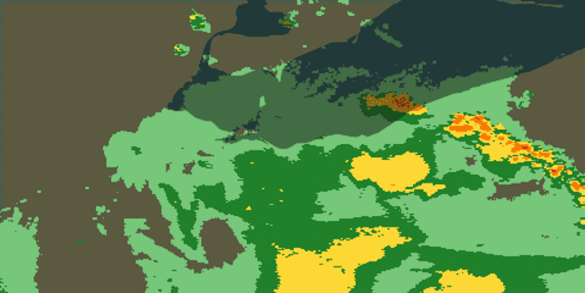
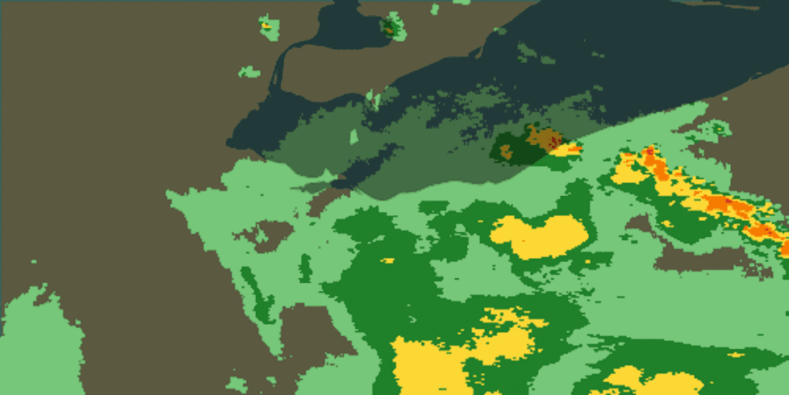
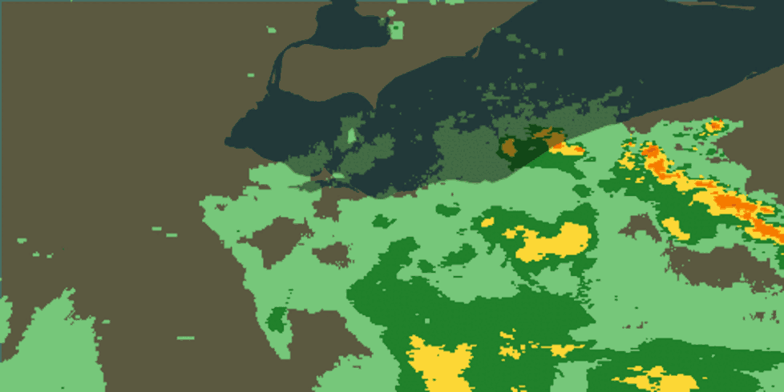
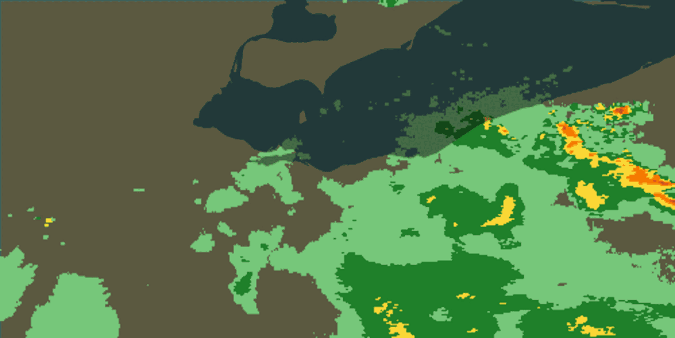
6:20 PM
Why it could work
The broad central spine steadily breaks apart while yellow pockets and small islands create several lines. It offers the most route choice without making the entire board dangerous.
Editorial opinion · strongest candidate for a strategic middle hole.
Candidate C
Stormwall
Course read · Par 5
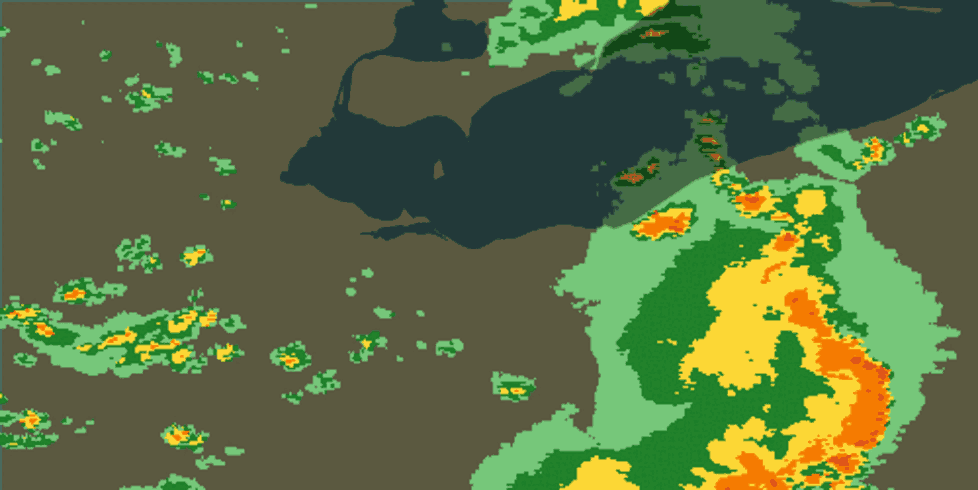
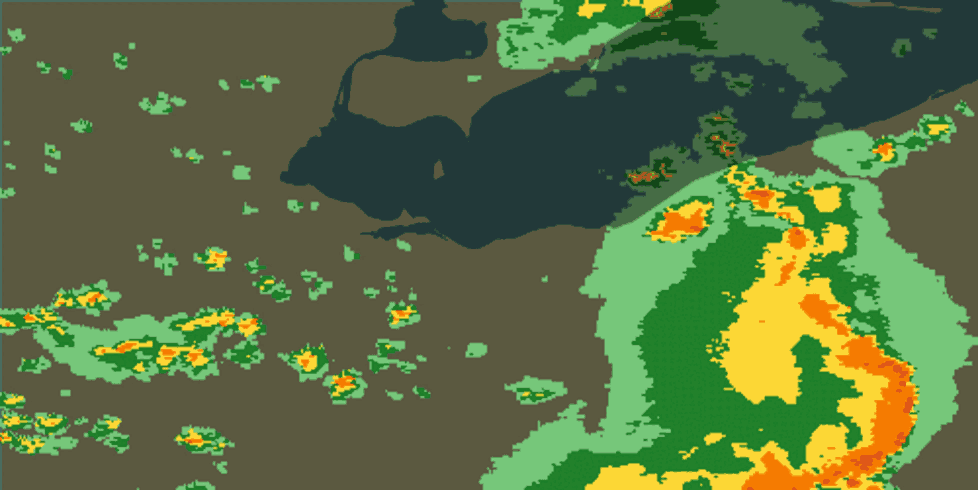
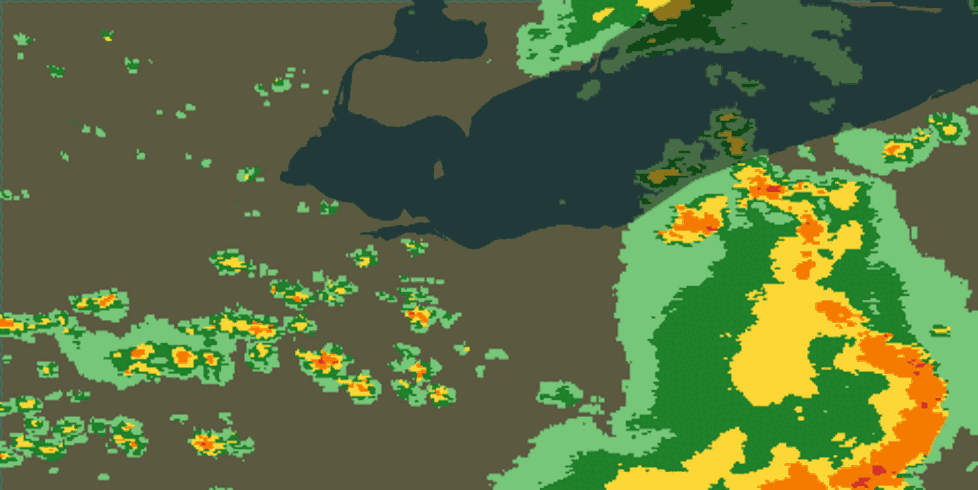
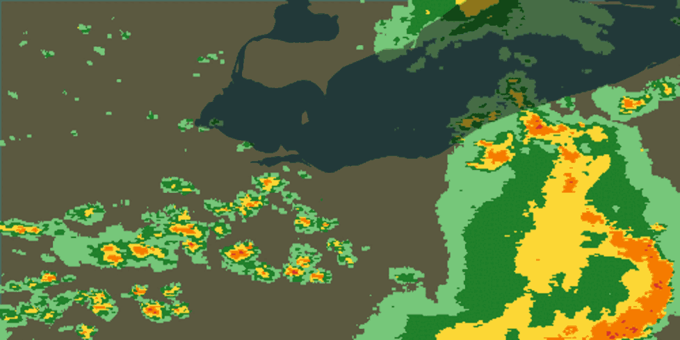
3:10 PM
Why it could work
A curved hazard wall dominates the right side while a chain of small western islands moves underneath the player. It creates the toughest “lay up or challenge it” decision of the four.
Editorial opinion · spectacular, but it will require the most careful hole authoring.
Candidate D
Backwash
Course read · Par 4
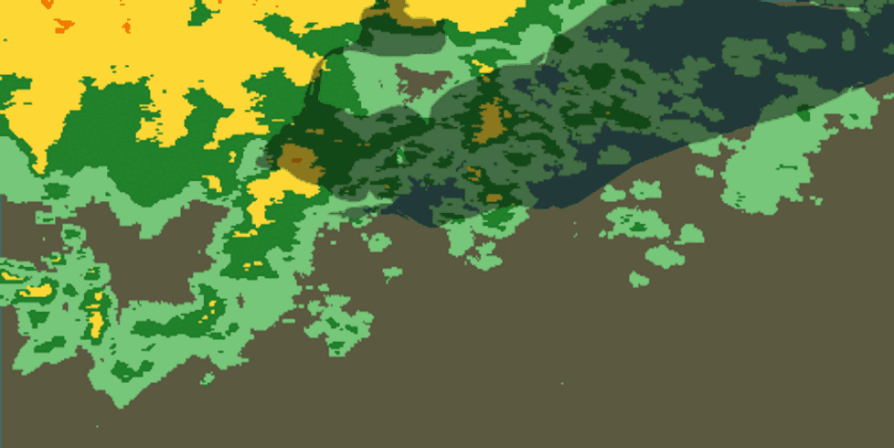
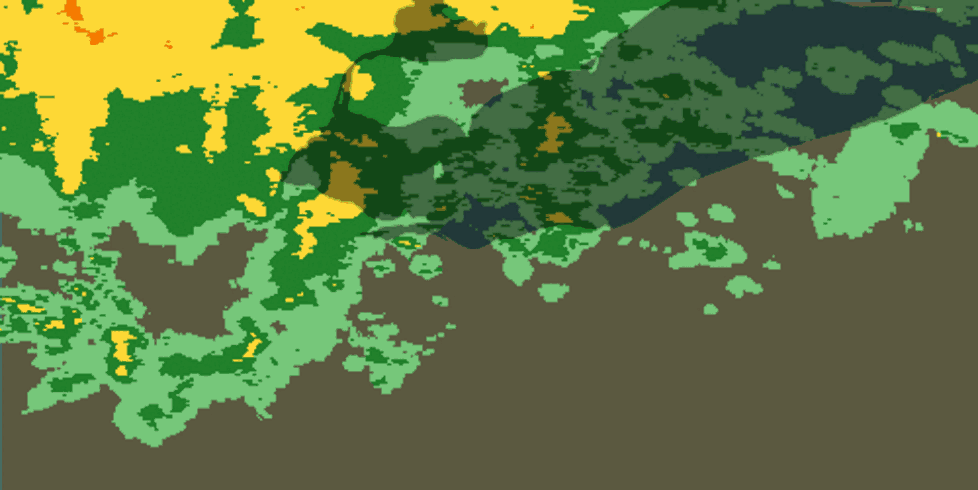
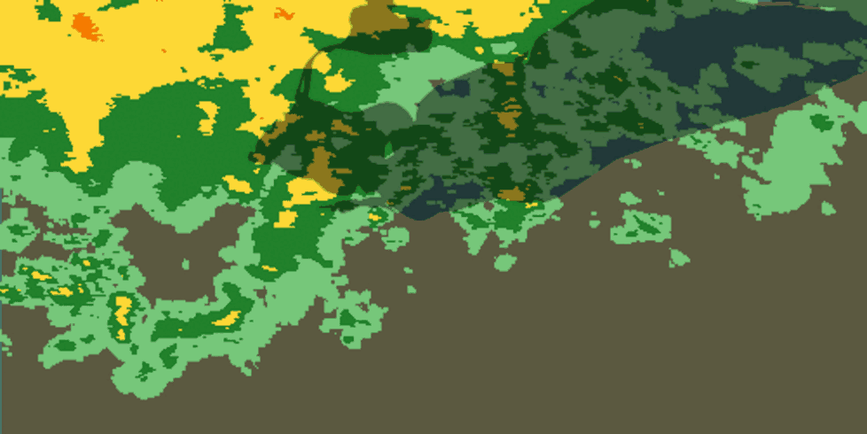
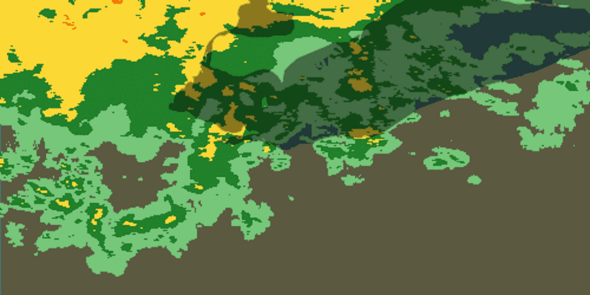
9:10 AM
Why it could work
A wide northern platform presses across the lake while a white fall-through corridor opens below it. The choice is whether to stay high near the hazards or chase smaller southern fragments.
Editorial opinion · visually distinct, with the best moving-water relationship.
My cut · opinion, not a decision
Build B, A, and D first. Keep C as the alternate.
B supplies route choice, A supplies scale and danger, and D makes the lake matter. C is gorgeous but risks becoming a hazard wall with only one sane answer—the exact failure mode we are trying to avoid.
Candidate-review prototype · real archived composite radar · no hole geometry has been authored or integrated